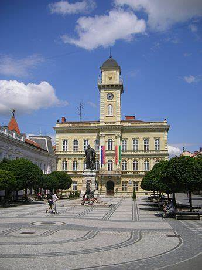
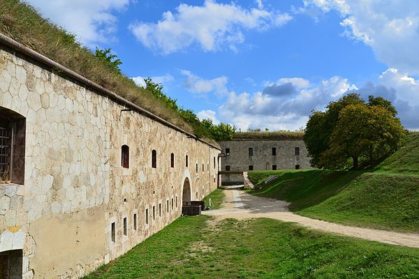
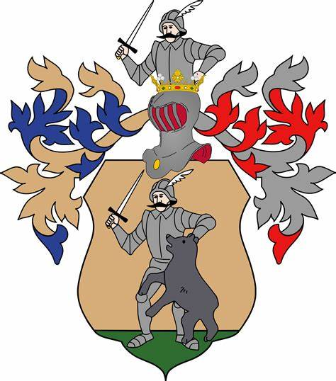
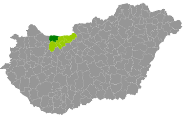
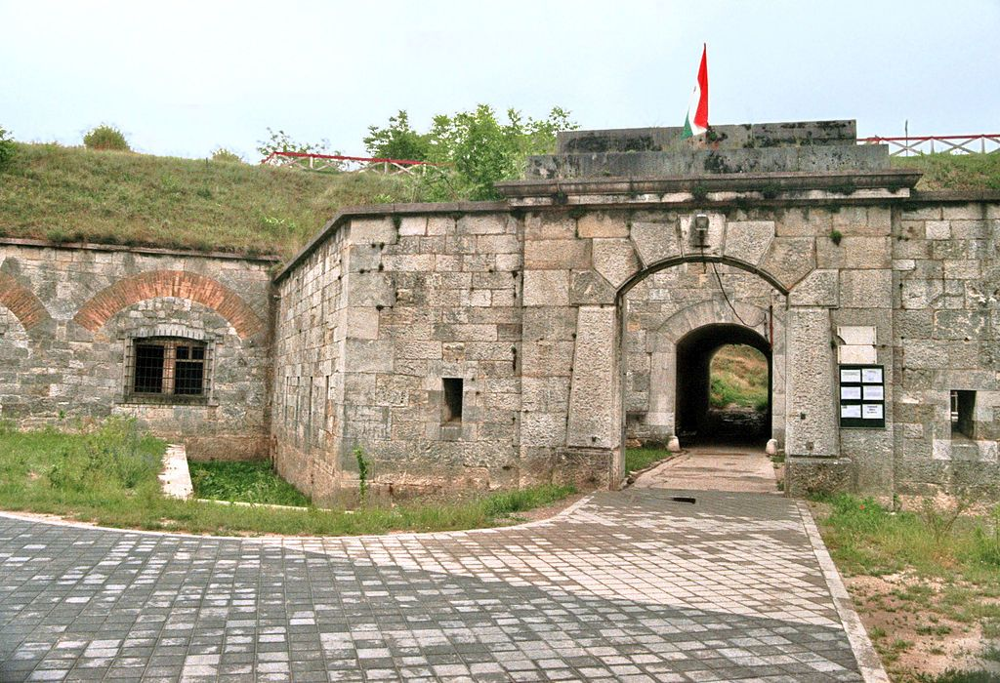
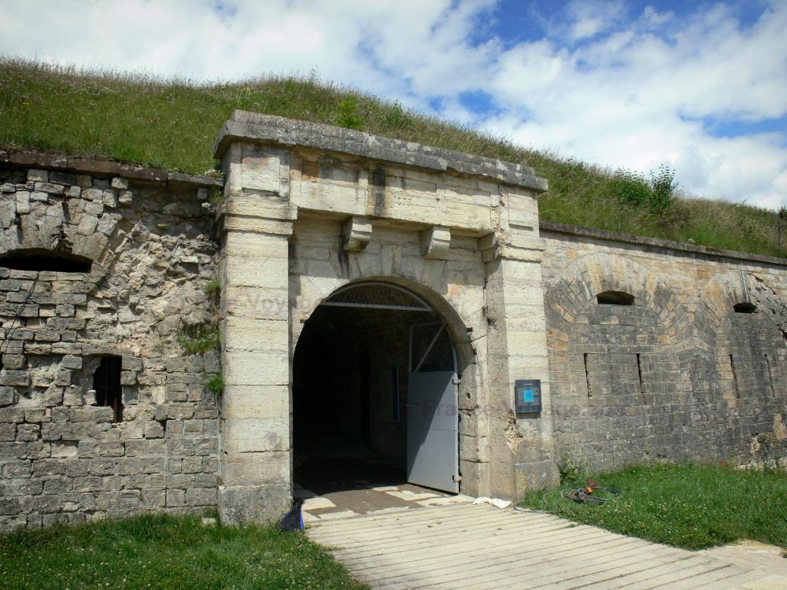

A Duna jobb partja már a római kor óta lakott, itt állt a Római Birodalom egyik jelentős határvárosa,
Brigetio. A török
hódoltság ideje alatt a Duna jobb partja elnéptelenedett, Komárom pedig a királyi Magyarország végvárává
vált. A város
sikertelen török ostromára 1594-ben került sor, majd ennek után kezdődött meg a komáromi erődrendszer
fokozatos
kiépítése. A jobb parti településrészek védelmére épült erődök ezután fontos szerepet játszottak az
1848–49-es
szabadságharcban is, amely során három ütközetre is sor került a Habsburg Birodalom és Magyarország csapatai
között. A
település fejlődésének fontos mérföldköve a Budapest-Bécs vasútvonal megépítése, amely 1884-re készült el
teljesen.






 Charge and save
Charge and save